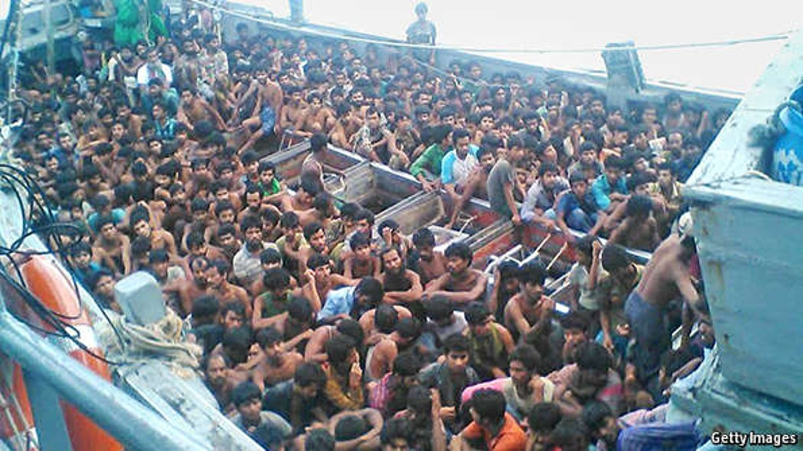
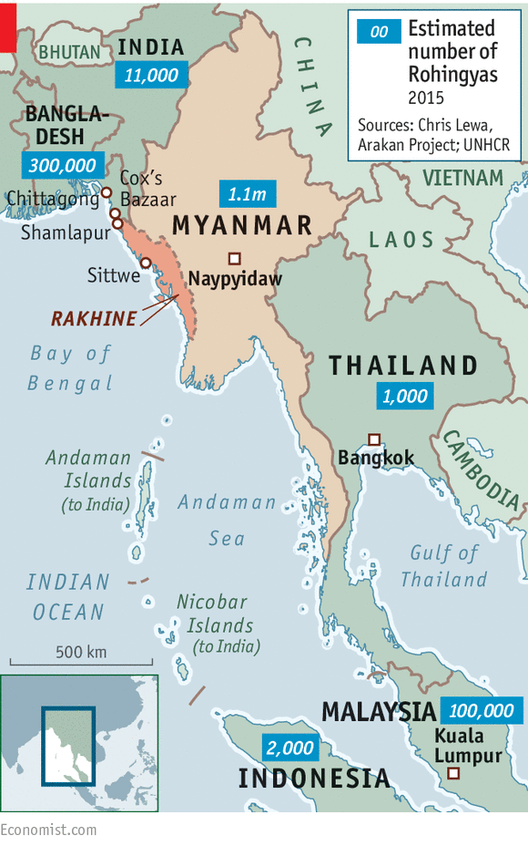
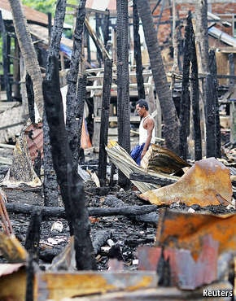
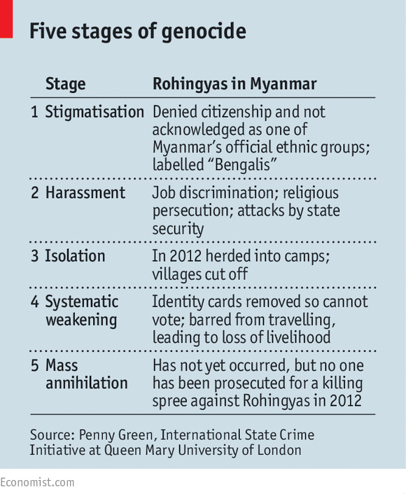

Myanmar’s Muslim minority have been attacked with impunity, stripped of the vote and driven from their homes. It could get worse

ARKAM was 12 when he watched men beat his father’s head with a brick and slaughter him with a knife. The family had been walking home from the mosque near their village in Rakhine, Myanmar’s westernmost state, when a stone-throwing mob blocked their path. Their Buddhist neighbours had ordered them to stop practising Islam. The murder was a punishment for clinging to their faith.
Now 18 years old, Arkam lives in a shipping container on a building site on the outskirts of Kuala Lumpur, Malaysia’s capital. He bunks with seven other Rohingyas, all refugees from Myanmar; they are among several hundred migrants living in containers stacked two storeys high along a single muddy track. By day they earn slightly less than the minimum wage building an apartment block, whose half-finished skeleton looms above their camp; in the evenings they can buy food and clothes from mobile stallholders who stop outside. Their containers are brightly lit and fairly clean, but the air reeks of sewage.
Arkam risked a lot to reach Malaysia. A little over a year ago he boarded a boat run by traffickers in the Bay of Bengal, with no idea what might follow. They travelled to Thailand, a 12-day sail with inadequate food and water, and occasional beatings from the crew. Of 1,100 people who set sail in two ships, Arkam believes that at least four died in transit, from illness or violence—he saw one man, hysterical, leap into the sea. Once he reached the shore, traffickers held him at a jungle camp until a relative paid them 6,000 ringgit ($1,600). By the time he reached Malaysia—hoisted over the razor wire along its northern border—he had been travelling for a month.
His bunkmate, a 20-year-old Rohingya called Ashan, tells a similar tale. One day, when he was nine years old, his father and elder brother went to pray at the mosque near their home in Rakhine. They never returned. About 18 months ago a mob set fire to houses in the village. He and a dozen others escaped by swimming across the river to Bangladesh. Traffickers were waiting on the other side and bundled him onto their boat against his will. He says that eight or nine of the 200 or so people he set off with perished in the following weeks. His captors were angry that he had not arranged for anyone to pay for his passage and they threatened to kill him; in the end people from his village scraped together 3,500 ringgit to buy his freedom.
Rohingyas have often been called the most persecuted minority in the world, unable to claim citizenship in Myanmar (where about 1.1m of them live in Rakhine), or in any other country. Arkam and Ashan are but two of the growing number of Rohingyas fleeing persecution in Myanmar to reach Malaysia, Indonesia or Thailand. In the first quarter of this year 25,000 people, Rohingyas and Bangladeshis, boarded boats to cross the Bay of Bengal. The sight of hundreds of emaciated men, women and children packed into the traffickers’ rusty old boats has caught the world’s attention. Yet Rohingyas have been escaping in droves for years; 100,000 or so are thought to be in Malaysia, drawn by the country’s prosperity and Islamic heritage.

Since 2012, when 140,000 Rohingyas were forced into squalid refugee camps after the local Buddhists turned on them, their situation has been especially dire. For, although unscrupulous traffickers often prey on the boat people, it is the terrible conditions at home in Rakhine that force the Rohingyas out to sea in the first place. Human-rights groups warn that the situation in Rakhine is now so desperate that, in the words of the Simon-Skjodt Centre of America’s Holocaust Memorial Museum, which campaigns to prevent genocide, the Rohingyas are “at grave risk [of] additional mass atrocities and even genocide”.
Hundreds of thousands of Rohingyas have fled to southern Bangladesh, particularly the region around Cox’s Bazaar. In the village of Shamlapur, Toheba Khatun, a 50-year-old Rohingya, says that she arrived from Myanmar 18 years ago after her husband was ordered to do forced labour by the Myanmar army: “We’d work all day with no food, and no pay at the end of it,” she says. One day her husband was unable to carry a box of weapons that weighed 60kg, and he was beaten mercilessly. So they sold everything they had and crossed into Bangladesh.
Ms Khatun worries constantly about her daughter, aged 14, who boarded a boat to Malaysia and has not been heard from for two months. Indeed, the Rohingyas in Malaysia form a community living “essentially in hiding” says Matthew Smith of Fortify Rights, a lobby group. Malaysia refuses to grant them any legal status. By law they are not allowed to work; in practice many new arrivals are exploited by employers who house them in cramped apartments or makeshift shelters. The state provides no health care; nor will it educate Rohingya children, who compete to attend a small number of learning centres funded by charities. Nonetheless, Arkam and Ashan still earn more in Malaysia than they did in Rakhine. And, says Ashan, when he goes to sleep at least he knows that he will wake up in the morning.
The victims’ victims’ victims
Muslims probably arrived in what was then the independent kingdom of Arakan (now Rakhine) as long ago as the 8th century. They were seafarers and traders from the Middle East, and were joined in the 17th century by tens of thousands of Bengali Muslims captured by the marauding Arakanese. Some were forced to serve in the king of Arakan’s army, others were sold as slaves and yet more were forced to settle in Arakan. “Rohingya” simply means “inhabitant of Rohang”, the early Muslim name for Arakan. The kingdom was then conquered by the Burmese army in 1785.
At this juncture there was little tension between the Muslims and the Arakanese. That all changed, however, with the British conquest of Arakan in 1825. As Arakan and Burma were administered as part of British India, hundreds of thousands of Bengalis (or “Chittagonians” as the British called them) flooded into Arakan to work. By 1941 about a third of the population of Akyab (now Sittwe) was recorded as coming from Chittagong or elsewhere in Bengal.
This mass immigration boosted the colonial economy, but local Arakanese bitterly resented it. They had no control over it, believing that their jobs and land were being taken over by people whom they still call “illegal immigrants”, or just (pejoratively) “Bengalis”. Relations further soured during the second world war when the retreating British armed some Muslims to fight against the Rakhine, who largely sided with the Japanese.
In post-war Burma, the Rakhine, like the other 135 officially recognised ethnic groups of the country such as the Kachin, Karen and Chin, were discriminated against by the Burmese military governments. As one Rakhine politician puts it, “we are therefore the victims of Muslimisation and Burmese chauvinism”. Myanmar’s post-independence governments, in turn, saw themselves as the victims of British colonial oppression, so both the Rakhine and the Burmese authorities have been more concerned with their own sense of victimhood than any claims of the Rohingyas. This is why Myanmar’s governments have never granted them citizenship or even recognised them as an indigenous ethnic group.
Bangladesh does not allow the Rohingyas citizenship, either. In the mid-1990s some 200,000 of them were brutally repatriated to Myanmar, a process shamefully overseen by the UN. The Rohingyas deny that they are merely Bengalis, and insist on their richer, more ancient heritage in the old Arakan kingdom. On this rests their claim to citizenship and as an indigenous ethnic group of Myanmar.

Sittwe burns
Any attempt to reconcile these two narratives was shattered by the ethnic cleansing in Rakhine state in 2012. Sparked by the rape and murder of a Rakhine woman by three Muslim men, about 200 people were killed as Rakhine mobs rampaged through Sittwe and other parts of Rakhine to drive the Rohingyas from their midst. The tens of thousands forced into camps were cut off from their livelihoods, and barred from schools and hospitals.
Researchers at the International State Crime Initiative (ISCI), a cross-disciplinary academic group, argue that some of this violence was organised. They spoke to Rakhine men who claimed they were bussed into Sittwe to attack Muslims, and were encouraged to bring knives. They were given free food for a day’s work. In the fervently anti-Muslim atmosphere of Myanmar, encouraged by both Buddhist monks and politicians concerned to defend their “race and religion” against supposed Muslim expansionism, this is seen as good politics. It is part of a last attempt by the government to stave off defeat at what is expected to be the first relatively free and fair general election for decades in November.
Professor Penny Green of the ISCI argues that the ethnic cleansing of 2012 was a stage in what she describes as the “process of genocide”. Historically, in other countries, this has started with stigmatisation and escalated to harassment, isolation and the systematic weakening of civil rights. Only after this grim groundwork has been laid is a genocide (ie, the mass annihilation of a people) likely to occur. The first four stages have all happened to the Rohingyas (see table). The terrible next stage is of course not inevitable in Rakhine state, but it is possible, argues Professor Green.

The Myanmar government angrily denies this. But Professor Green points out that those attacking Rohingyas enjoy complete impunity; no one has even been prosecuted, let alone jailed, for the killings in 2012. In the present climate of hostility, it would only take a spark, perhaps provided by the election, for the worst to happen.
Despite these dreadful provocations, the Rohingyas have so far remained remarkably pacific. Others, however, are more militant on their behalf, provoking fears of an Islamist backlash against Myanmar, or even Buddhism in general. Most recently Abu Bakr al-Baghdadi, the leader of Islamic State (IS) in Iraq, asked in a sermon on May 14th: “Where is the support of al-Salul [a derogatory term for the Saudi royals] and their allies for a million of the weak Muslims who are all without exception being exterminated in Burma?”
So far this sort of rhetoric has not amounted to much. Rakhine has not turned into another Chechnya or Kashmir (ie, a big draw for angry young jihadists), for three reasons. First, foreign fighters these days are drawn mainly to join IS in Syria and Iraq, which offers them a more glamorous cause: fighting for a caliph rather than defending poor farmers and fishermen. Second, Myanmar secures its borders well, making it hard for foreign jihadists to reach the would-be battlefield. And third, as Thomas Hegghammer, a Norwegian expert on Islamism, explains, militants “don’t go to where Muslims suffer; they go to where Muslims fight.” Rakhine today has more killing fields than battlefields.
Myanmar in graphics: An unfinished peace
For Rohingyas, the alternative to fighting is flight. In Malaysia recent pictures of Rohingyas adrift in the Andaman Sea could mark the first steps to improving the refugees’ lives when they step ashore and dismantling the networks which traffic them. Malaysia’s Muslim politicians, spying a chance to stoke religiosity, insist that ethnic Malays have a duty to help the Rohingyas. Most campaigners are pessimistic about lasting change, however. “It will be talked about for three or four months, and nothing will come of it,” says Aegile Fernandez of Tenaganita, a migrant-rights charity. But, unless something changes, life is so bad for Rohingyas in Myanmar that thousands more will try to escape on rickety boats when the next dry season arrives in November.
Timeline picture credits: AFP, Alamy, Bridgeman, Getty, Richard Cockett, Wikipedia